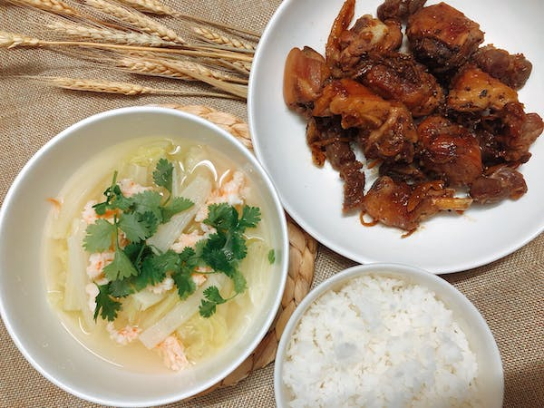

Vietnam
Vietnam is known for its delicious and healthy cuisine, characterized by its use of herbs and vegetables, and a balance of salty, sweet, sour, and spicy flavors. Vietnamese dishes are also heavily influenced by French and Chinese cuisine.
Popular Dishes
- Pho Noodle Soup - A delicious and hearty soup made with rice noodles, beef or chicken, and a variety of herbs and spices.
- Goi Salad - A refreshing salad made with a variety of vegetables and protein, and a tangy dressing.
- Banh Mi - A popular sandwich made with a French baguette and filled with a variety of meats, vegetables, and condiments.
- Banh Xeo - A crispy savory pancake filled with shrimp, pork, and bean sprouts.
Ingredients
- Coriander - A herb used to add a fresh and fragrant flavor to dishes.
- Lemongrass - A fragrant herb used to add a citrusy flavor to dishes.
- Fish Sauce - A staple condiment used to add a salty and umami flavor to dishes.
- Rice Noodles - A staple ingredient used in many Vietnamese dishes.
Cooking Methods
- Grilling - A method of cooking food over an open flame or hot coals.
- Stir-frying - A quick cooking method that uses high heat to cook food quickly and evenly.
- Boiling - A method of cooking food by submerging it in boiling water or broth.